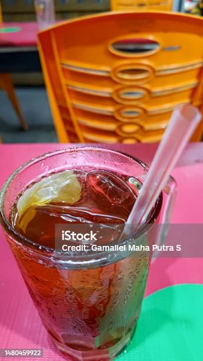
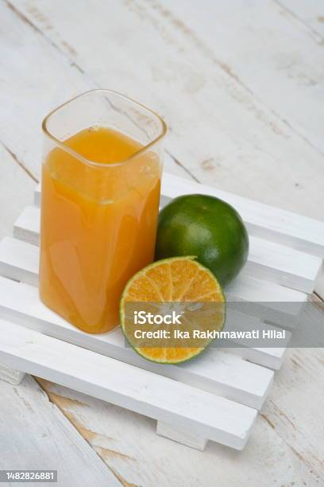
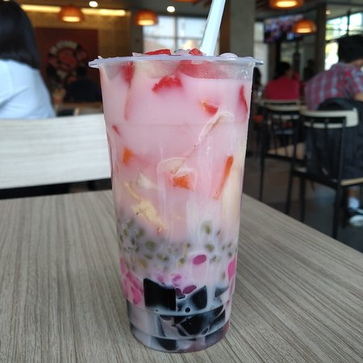
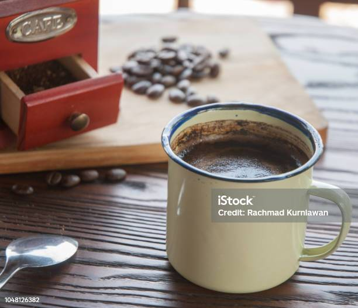
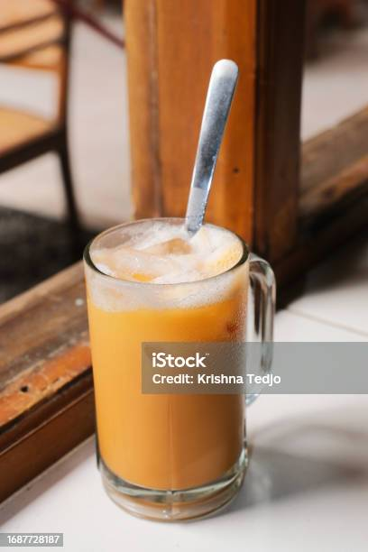

Gallery
Boisson
Découvrez notre sélection de boissons indonésiennes rafraîchissantes, conçues pour accompagner parfaitement votre repas et vous rafraîchir par temps chaud. De boissons traditionnelles aux créations spéciales, vous trouverez quelque chose pour satisfaire toutes vos envies.
Notre version du thé glacé sucré indonésien. Rafraîchissant et sucré à souhait, c'est la boisson idéale pour étancher votre soif.
Un délicieux jus d'orange frais, sucré et rafraîchissant. Parfait pour les amateurs de jus de fruits naturels.
Un dessert glacé transformé en boisson, composé de glace pilée, de fruits tropicaux, de perles de tapioca et de jus sucré. Une explosion de saveurs et de textures.
Le café indonésien traditionnel, préparé avec du café moulu grossièrement, du sucre et de l'eau. Un café fort et sucré pour les amateurs de café corsé.
Du thé fort et chaud, mélangé avec du lait sucré pour obtenir une boisson crémeuse et réconfortante. Un incontournable pour les amateurs de thé.
